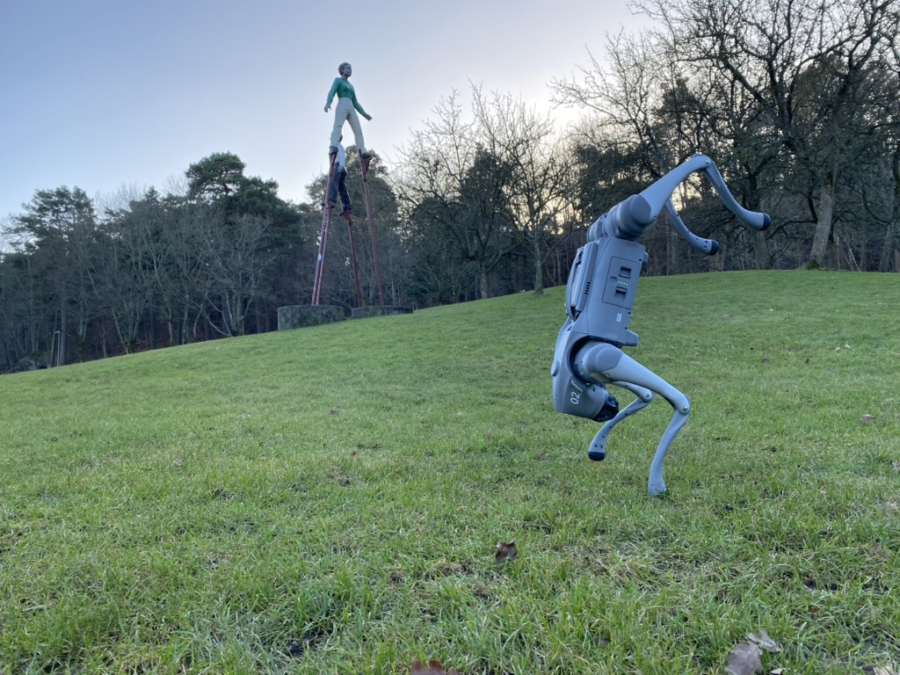
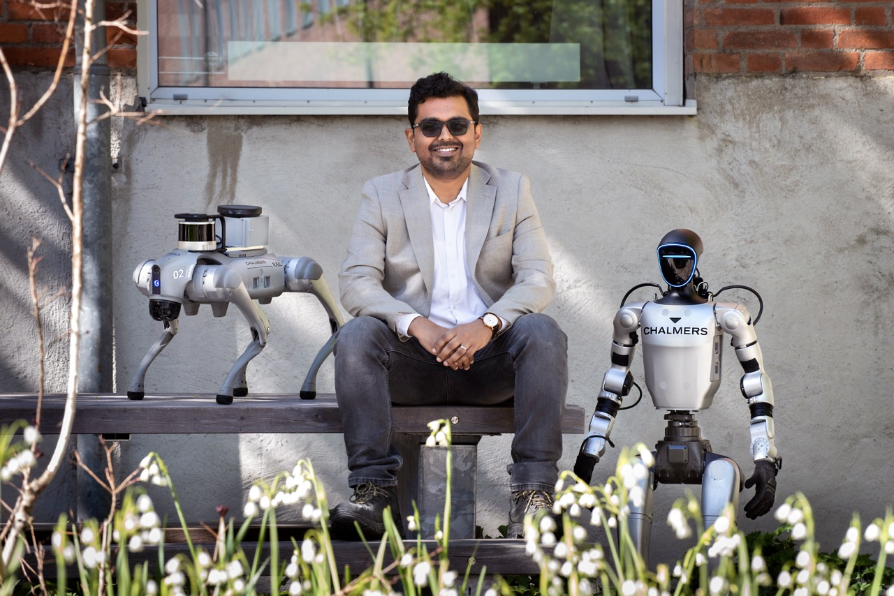
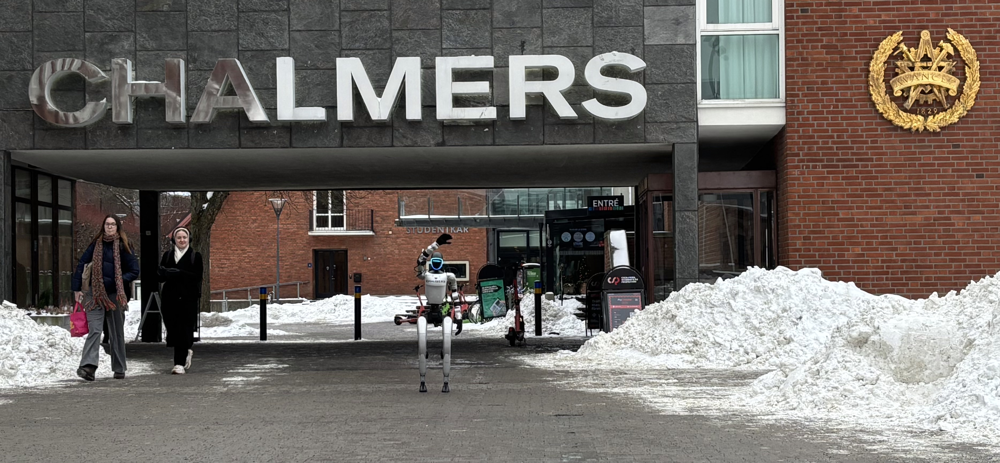
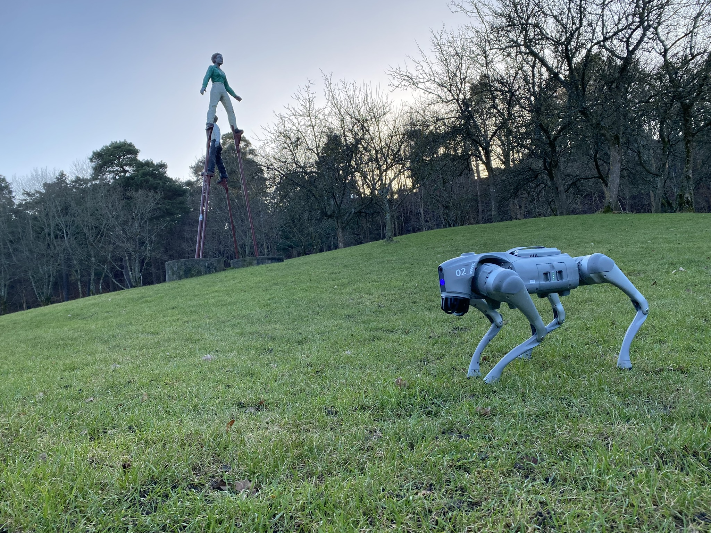

Robot Athletic Intelligence Lab · Chalmers University of Technology
Our Vision
Next-generation versatile automation
with highly dynamic robots.
We develop physical and athletic intelligence for underactuated robots, legged machines, and humanoids — bridging optimal control, multi-body dynamics, and machine learning.

Photo: Lisa JabarPrincipal Investigator
Shivesh Kumar
Assistant Professor (Tenure Track)
Department of Mechanical Engineering
Chalmers University of Technology, Gothenburg
PhD summa cum laude, University of Bremen (2019) · Team Leader: Mechanics & Control Team and Founder of Underactuated Robotics Lab, DFKI Bremen (2019–2023) · SSF Future Research Leader (2025–2030) · New Generation Star in Robotics Research, IROS 2024

Our Motto
Athletic Intelligence
Robots that move with the agility, efficiency, and resilience found in nature — underactuated, dynamic, and certifiably robust. An AI that is physically grounded yet connected to cognitive aspects of intelligence.

Grants & Recognition
Awards & Funding
🏅 SSF Future Research Leader Grant · 15 MSEK · 2025–2030
🏅 WASP PhD Project Grant · 4 MSEK · 2024–2029
🏆 EuroGNC 2024 Best Paper Award
⭐ New Generation Star in Robotics Research — IEEE/RSJ IROS 2024
🤖 No. of Robots: 7

Join the Lab
Open Positions
We welcome motivated PhD students, postdoctoral researchers, and master's thesis students passionate about underactuated robotics, optimal control, reinforcement learning, and open reproducible science.